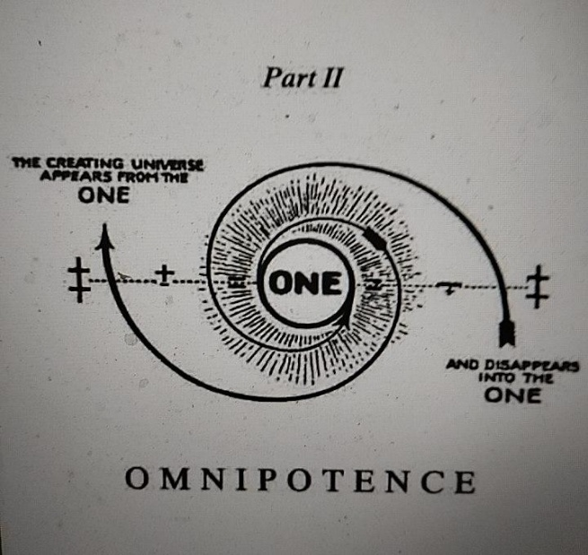
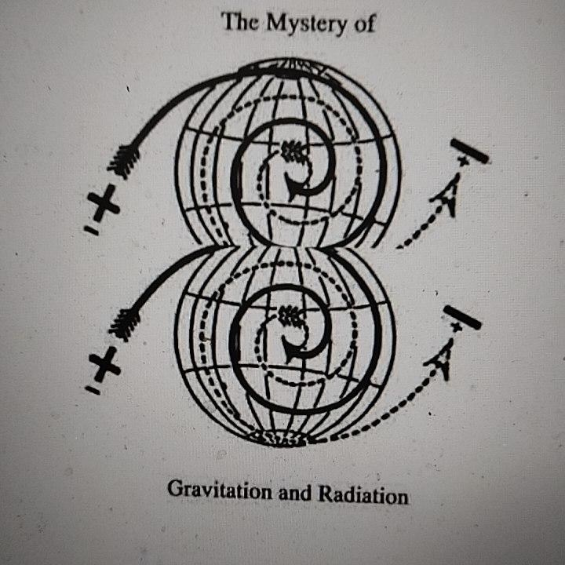

Mindism
"An exact science of the One visible and invisible universe of Mind and the registration of all idea of thinking Mind in light, which is matter and also energy." — Walter Russell


MINDISM is a practical way of thinking about and interacting with the physical realm. Ultimately, everything is a state of mind.
Mindism directs the thoughts, actions and behaviours of the individual to naturally improve the quality and activity of their mind, to enjoy learning and benefit from striving to do the right thing whenever possible. Not only does this enhance the quality of life of the individual but it also facilitates the general health and organic development of mind, body and spirit. It is founded on universal truths that apply throughout the whole universe.
Voices of Eminent Minds
"All matter originates and exists only by virtue of a force; we must assume behind this force is the existence of a conscious and intelligent Mind. This Mind is the Matrix of all matter." — Max Planck, 1856–1947, the Father of Quantum Physics
"Anyone who becomes seriously involved in the pursuit of Science becomes convinced that there is a Spirit manifest in the Laws of the Universe, a Spirit vastly superior to that of man." — Albert Einstein
"The day Science starts to study nonphysical [metaphysical] phenomena, it will make more progress in one decade than in all of the previous centuries of its existence." — Nikola Tesla
"If science knew what light actually is, instead of the waves and corpuscles of incandescent suns, a new civilisation would arise from that one fact alone." — Russel Wallace
"Don't believe anything I tell you, don't believe anything anyone tells you, not even me. Look inside and you will find truth." — Siddhartha Gautama, The Buddha (allegedly)
Like the Tao Te Ching by Lao Tzu, this work uses words to attempt to facilitate understanding and explain and describe that which is beyond words, i.e. the mental, non-dimensional realm of Soul and Mind and the Aetheric, zero point realm of 'Spirit.'